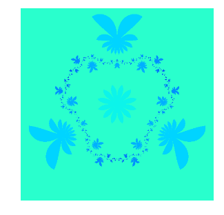
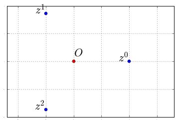
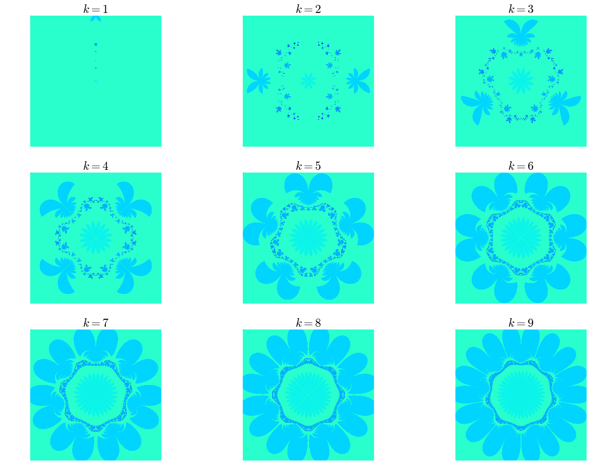

Biomorphes 3/3 : fin
Dans le billet précédent, j'ai colorié un domaine du plan complexe en partant de la fonction \(p\) suivante :
Ce qui a donné la très belle image suivante :
On peut observer une symétrie sur le dessin : si vous faites tourner la figure autour de son centre d'un tiers de tour (c'est-à-dire : si vous faites une rotation d'angle \(\frac{2\pi}{3}\)), vous retrouvez la même figure. On dit que la figure présente une symétrie d'ordre 3.
Pourquoi cette symétrie ? Pour expliquer cela, un petit rappel sur les complexes : si vous avez un nombre complexe de module 1, mettons
une application de la formule de Moivre donne :
Donc si on choisit \(\theta = 2\pi/3\), les points d'affixe \(z,z^2,z^3=1\) se répartissent sur les sommets d'un triangle équilatéral puisqu'ils se déduisent les uns des autres par multiplication par \(z\) qui code la rotation de centre \(O\) et d'angle \(\dfrac{2\pi}{3}\) :
title_font = { 'size':'22', 'color':'black'} z = exp(2j*pi/3) X = [ (z**k).real for k in range(3)] Y = [ (z**k).imag for k in range(3)] matplotlib.rcParams.update({'font.size': 1}) for k in range(3): plt.text(X[k]-0.2,Y[k], r'$z^{}$'.format(k),**title_font) plt.text(0,+0.1, r'$O$',**title_font) plt.plot(X,Y,'o') plt.plot(0,0,'ro') plt.axis('equal') plt.grid('on')
On voit très bien qu'il y a une symétrie d'ordre 3, puisque si vous faites des tiers de tour autour du point rouge, l'ensemble des points bleus (situés sur les sommets d'un triangle équilatéral) n'a pas bougé.
Ainsi, dans la fonction \(p\) n'a plus grand chose d'une bestiole, la présence de l'exposant \(-3\) dans l'expression de \(p(z)\) induit une symétrie d'ordre 3.
Et si on regardait en introduisant une symétrie d'ordre \(k, k \ge 1\) ? C'est-à-dire en essayant avec la fonction
# nombre de points dans le domaine nx = 300 ny = 300 fig =plt.figure(figsize=(20,20)) ; # je dimensionne le dessin k=1 for k in range (1,10): (xmin,xmax,ymin,ymax) = domaine ax = fig.add_subplot(430+k) # je crée un sous-graphique plt.title(r'$k={}$'.format(k),**title_font) # je lui mets un titre plt.axis('equal') # repère orthonormé coloriage(k, xmin, xmax, ymin, ymax, nx,ny,ax)
Vous voyez se dessiner à l'interface avec les "pétales" une espèce de dentelle qui évoque un polygone à \(k\) côtés (pour \(k=5\), on voit très bien le pentagone). Ça ferait des jolis sweats non ? J'ai enfin généré l'animation de \(k=1\) à \(k=9\) par pas de \(1/10\) pour voir l'évolution de la figure à mesure que $k$ augmente :
Pour savoir comment la fabriquer en Python allez voir ici.